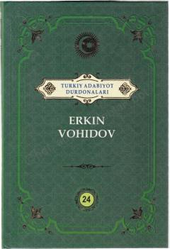

TAErkin Vohidovning sara she'rlari va dostonlari jamlangan to'plam.
Ushbu kitob 'Turkiy adabiyot durdonalari' majmuasiga kirgan bo'lib, O'zbekiston xalq shoiri Erkin Vohidovning saralangan she'riy asarlarini o'z ichiga oladi. To'plamda shoirning turli yillarda yozilgan sara she'rlari, dostonlari va falsafiy mushohadalarga boy ijod namunalari jamlangan. Asar o'zbek she'riyatining nodir namunalaridan bahramand bo'lishni istagan kitobxonlarga mo'ljallangan.